Ben ha desarrollado una pasión por la fotografía y videografía en los años que trabajaba en socorro en casos de desastre en países extranjeros. Traerá sus nuevas habilidades al sector sin fines de lucro cuando se gradúa en diciembre
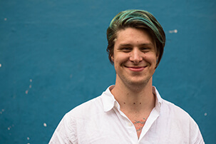Nicole es una estudiante de edición y diseño grafico en su ultimo año con la habilidad hablar Español. Como una crítica de visuales, espera traer las perspectivas inesperadas a vivir a través de diseño significativo
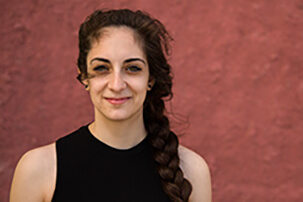Kate es una desarrolladora web quien le encanta resolver problemas, explorar lugares nuevos y acriciar todos los gatos que ve
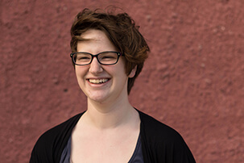MC es una estudiante de último año quien estudia publicidad y español. Hace arte tradicional y diseño gráfico en su tiempo libre. Se inspira sus viajes, la música y las historias de la gente alrededor de ella.

Lindsay piensa mucho de grandes conjuntos de data y pequeñas redacciones. Era una pasante de visualización de datos para el Texas Tribune. Este verano será una editor digital para el NYT Student Journalism Institute.
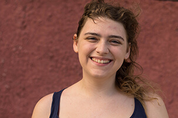Emma es una estudiante del fotoperiodismo. Ha trabajado en communicaciones y cobertura. Ahora trabaja como una especialista en los medios en Duke Hospital. Espera perseguir una carrera en periodismo y la política.
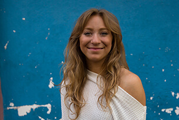Videógrafa
Emma Carl
Peyton está en su tercer año estudia multimedia interactivo y las politicas de latinoamerica. Él es un Wood Scholar en UNC. Además de diseño y desarrollo web, él le gusta cantar, leer y viajar.
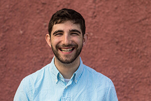Kiana está en su tercer año estudiando periodismo y también historia y música. Frecuentamente puedes encontrarla en otro país. ¡Ella le agradece por estar aquí y está emocionada de compartir Cuba's New Wave contigo!
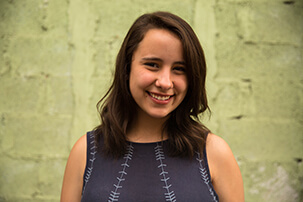Claire está en su último año y estudia fotoperiodismo y también el árabe. Nació en Hong Kong y creció en Amman, Jordan. Ella le encanta viajar, contar historias contra estereotipos y subir árboles buenos.
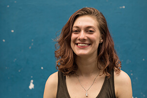Veasey es un fotógrafo freelance en Carolina del Norte y también es un recipiente de la beca de Roy H. Park. Es un estudiante de maestría en communicaciones visuales. Antes, era un fotoperiodista en un periódico en Carolina del Sur.
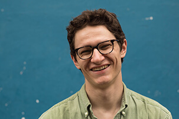Bridgette está en su primer año de su maestría de las comunicaciones visuales. Su trabajo exploran la atribución de poder de las mujeres y ella siempre está buscando humor en lugares inesperados.
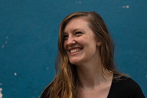Kira es una fotoperiodista, nació y creció en Asheville, N.C. Además de la fotografía le encanta leer, hiking, la música y viajar.
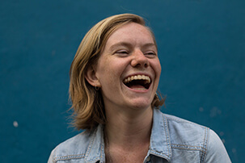Viviane está en su ultimo año, graduará con una licentiatura en fotoperiodismo y estudios islamicos. Ella es apasionada de defensa social con multimedia y le gusta encontrar gente nueva a través de la narración.
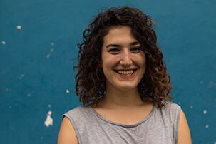Robert está en su tercer año estudiando fotoperiodismo y ciencias ambientales. Anteriormente trabajaba en Tailandia y Nepal. Su trabajo ha aparecido en BuzzFeed y PBS NewsHour.
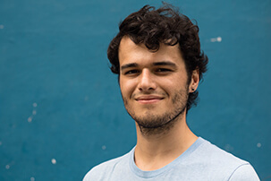Ally es una diseñadora y periodista, es interesada en conectar las personas en todo el mundo a través de la narración visual. La inspira su fondo en pintura y danza.
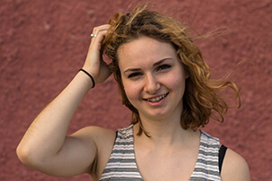Delaney estudia reportero y medios latinos. Era jefa de redacción de un periódico campus, The Tab. Después de se gradúa, espera escribir historias de cultura y ciencia.
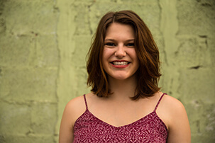Blake estudia periodismo y psicología y es una ayudante de edita de la sección de deportes para el periódico, The Daily Tar Heel. Sus metas de vida incluyen escribir historias inspiradoras, correr una ultra maratón y poseer muchos perros.
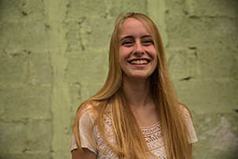Natalie es una narradora de visuales basada en Chapel Hill, NC, donde está en su primer año de la escuela posgrado en UNC en La Escuela de Los Medios y Periodismo.
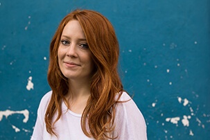Danielle estudia periodismo televisivo, ciencias políticas y estudios Hispánicos. Está trabajando en dos proyectos internacionales de reportero este semestre, en Cuba y Francia. Se graduará en Mayo 2017.
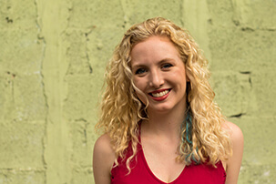Alma está en su tercer año y estudia desarrollo web, escritura creativa y escritura de guiones. Su sueño de vida es combinar las tres pasiones para hacer historias atractivas que llaman la atencíon de gente.
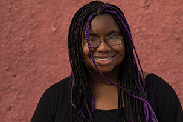Darian está en su segundo año de fotoperiodismo y estudios globales, enfocando en el desarrollo de la comunidad de Latinoamerica. A través de fotografía y exploración, espera capturar las historias verdaderas de la humanidad.
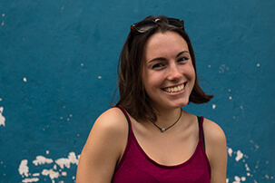Emily es una fotógrafa y videógrafa periodista, una caricaturista político, una ilustradora y animadora que quiere hacer para el resto de su vida.
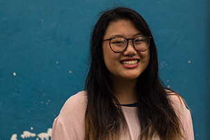Echo es una estudiante de Chino. Está desarrollando sus habilidades como una artista y una diseñadora visual, aprendiendo como dominar las técnicas de diseño, como trabaja en condiciones distintas y como siempre ser creativa.
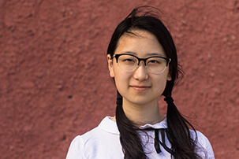Paul Cuadros es un profesor contratado en La Escuela de Los Medios y Periodismo en UNC-Chapel Hill. Él es un premiado reportero y autor investigativo.
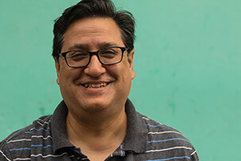Anna es una fotógrafa y videógrafa documental y está acabando su maestría de periodismo visual en UNC. Tiene una pasión por los problemas de salud de las mujeres y está trabajando su primer largometraje de una joven transexual.
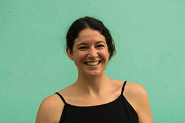Crisitina es una fotógrafa y videógrafa en el St. Louis Post-Dispatch en Missouri. Era una parte del Premio Pulitzer para Breaking News Fotografía, dado al personal de fotografía de Post-Dispatch.
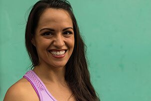Kelly Creedon es un cineasta documental independiente y profesor adjunto en UNC de La Escuela de Los Medios y Periodismo, donde recibió su maestría en comunicación visuales en 2015.
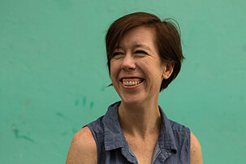Tamara ha estado enseñando en La Escuela de Los Medios y Periodismo desde 2015. Ella está emocionada ser la instructora del equipo de diseñadores y desarrolladores para el proyecto. Cuando no está enseñando, está ocupada por su propia compañía de desarrollo web y también creciendo sus 3 hijos.
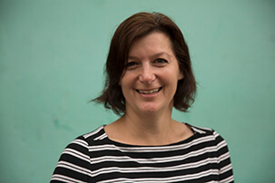Pat es el profesor Julian Scheer y el director de los proyectos documentales de la escuela. Ha conducido 25 equipos de estudiantes en proyectos multimedia en el país y en el extranjero que han sido reconocidos por los mejores premios de la industria.
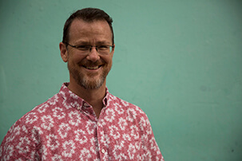